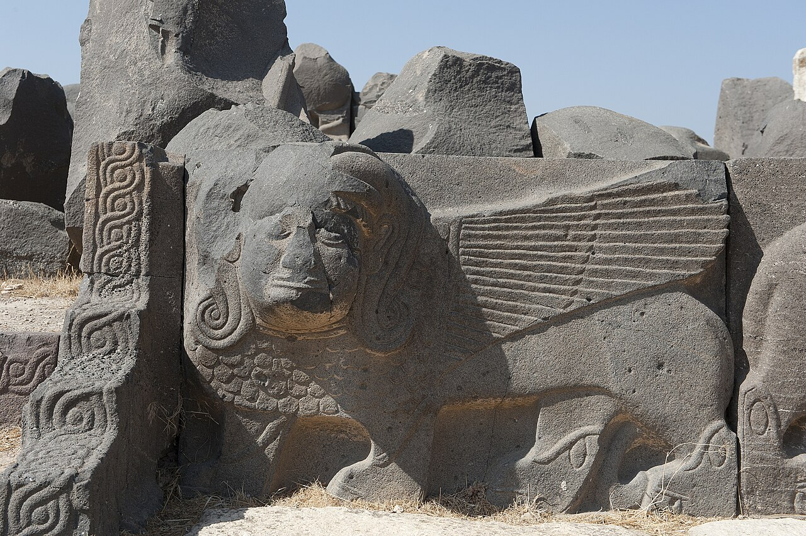

Ain Dara Temple

- Find Name
- Ain Dara Temple
- Historical Period
- Iron Age II
- Artifact Date
- Iron Age (c. 1000–800 BC)
- Date Discovered
- 1955
- Discovery Location
- Ain Dara, near Aleppo, Syria
- Current Location
- In situ near Aleppo, Syria (damaged in 2018)
- Timeline Era
- United Monarchy
- Description
- A Syro-Hittite temple in northern Syria, discovered in 1955 and excavated in the 1980s. Its layout matches Solomon's Temple in Jerusalem almost feature for feature: a porch with two columns, a main hall, and a raised inner sanctuary, decorated with lions, cherubim-like creatures, and — carved into the threshold — a pair of giant footprints, as if a god had walked in.
- Biblical Significance
- Solomon's Temple is gone, but its neighbors built temples the same way — and Ain Dara lets us picture what 1 Kings 6 describes: the porch, the hall, the Most Holy Place, the carved guardians. The footprints at the door are a silent sermon: the ancients believed their gods entered their temples, while Israel's God promised something greater — to dwell among a people, not a building.
- Evidence Class
- Contextual
- Interpretations
- Scholars agree the temple’s tripartite plan parallels Solomon’s Temple; it is a neighbor’s temple, not Israel’s, so it illuminates the Temple’s architecture rather than proving its existence.
- Scripture Illuminated
- Related Books